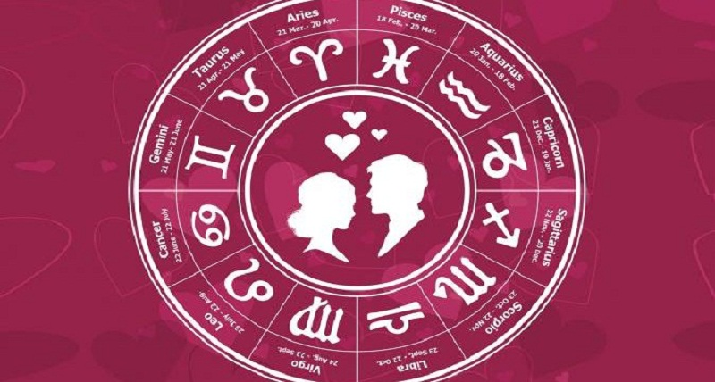

Бидний тухай
Зурхай уншигчдын 70 хувь нь эмэгтэйчүүд байдаг.
Зурхайчид нар, сарны нөлөө хүмүүст ямар нэгэн байдлаар нөлөөлж байдаг гэж үздэг. Сар нь хүний сэтгэлийн гүн гүнзгий хөдлөлтэй холбоотой байдаг. Сарны эрх мэдэл нь эмэгтэйчүүдийн сарын тэмдгийн мөчлөгт нөлөөлдөг гэж үздэг.
Америкчуудын гуравны нэг зурхайн зурганд итгэдэг. Тэд хамгийн хурдацтай хөгжиж буй зурхайд итгэгч бүлэглэлийн тоонд багтаж байна.
Америкийн Ерөнхийлөгч Рональд Рейганы гэргий Нэнси нөхрийнхөө ирээдүйд санаа тавьж, аюулгүй байдлыг урьдчилан харахын тулд зурхайч ажилд авч байжээ.
Дэлхийн хамгийн алдартай зурхайчаар Дэлхийн II дайн болохыг урьдчилан хэлж, Америкийн Ерөнхийлөгч Жон Кеннедигийн амь насанд халдах хар өдрийг мэдэж, Дэлхийн худалдааны төвийн довтолгоонд өртөхийг тэмдэглэж үлдээсэн Нострадамус нэрлэгддэг.
Google.com сайтад өдөрт зурхай хайсан ойролцоогоор 2 сая хандалт орж ирдэг.
Жилийн цагалбар нь анх хөдөө аж ахуйд зориулагдан гарч байсан бол одоо од мичид болон бусад танигдсан зурхайн однуудын мэдээллийг багтаадаг болсон.
АНУ-ын Сиэтл хот дахь Одон орон судлалын академийн Кеплер коллеж бол баруун дахь энэ төрлийн анхны академи. Тус академи зурхайчдад баклавар болон магистрын зэрэг олгодог байна. Академийн эхний курс нь 2000 оны 7 сараас эхэлсэн. Жилийн төлбөр нь 5000 доллар. Коллежийг Германы математикч, одон орон судлаач Йоханнес Кеплерын нэрээр нэрлэсэн байна.
1999 онд searchterms.com сайт судалгаа явуулж, зурхай, зурхайч гэсэн үг нь интернет дэх хамгийн их эрэлттэй үг болохыг тодорхойлж байв.
Зурхайн нь шинжлэх ухаан, урлаг хоёрын аль аль нь юм. Математик, одон орны тухай ойлголтууд шаарддаг учраас шинжлэх ухааны статустай байдаг. Одон орон талаасаа бол өөр өөр талуудыг хамтад нь авч үзэж, хувь хүний зан чанар, хандлагыг тодорхойлж байдаг.
Дундад зууны үед Католик шашны олон тооны пап лам нар зурхайчтай маш ойр дотно байжээ.
Адольф Гитлер II дайны туршид зурхайчдыг ашигласан гэж үздэг.
Од гариг таныг газарзүйн байршлаас хамааран танд өөр өөрөөр нөлөөлдөг гэж одон орон судлаачдын практикт үздэг. Таны төрсөн гаригийг дэлхийн өөр өөр хэсгүүдтэй харьцуулснаар хамгийн амжилттай, аз жаргалтай зурхай гарч болно гэж үздэг байна.
1999 оны судалгаагаар америкчууд одон орон судлалд 100 сая доллар зарцуулжээ.
АНУ-д 6000-8000 мэргэжлийн зурхайчид байдаг.
Немцийн одон оронч Соботтендорф 1923 онд Гитлерийг ямар ч юм хийж болохгүй гэж хэлсэн боловч Гитлер түүнд итгэлгүй Мюнхены төрийн эргэлтийг хийсэн нь бүтэлгүй болж шоронд оржээ.
Шинжлэх ухаан зурхайн талаар олон баталгааг өгдөг. Тэдний нэг нь таны генетикийн шинж чанарууд эхийн хэвлийд бүрэлдэх үеэс эхэлдэг гэж үздэг явдал. Эрдэмтэд болон одон орон судлаачдын үзэж байгаагаар нарны бус биетүүдийн гравитацийн хүч, оддын хөдөлгөөн, нарны хөдөлгөөн, дэлхийн тэнхлэгийн эргэлт зэрэг нь нөлөөлдөг гэж үздэг.